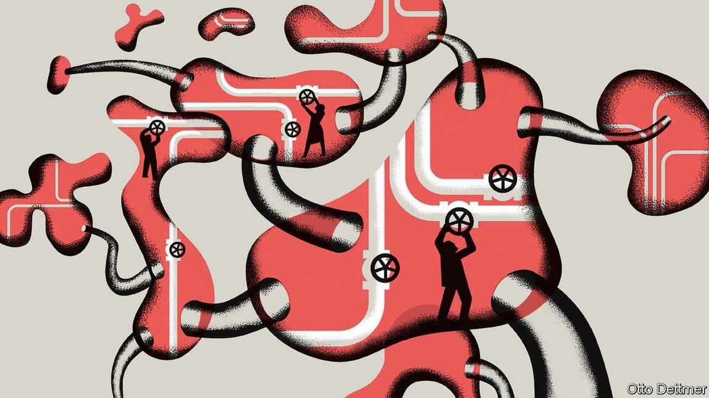

Text
2021-09-14T14:51:04+00:00
Free exchange
自由交流
自由交流
At the Jackson Hole meeting, the Fed ponders an uneven recovery
在杰克逊霍尔，美联储思索复苏不均衡难题
在傑克遜霍爾，美聯儲思索復蘇不均衡難題
Research presented at the monetary policymakers’ virtual pow-wow offers guidance
这次线上货币政策会议上发布的研究给出了指引
這次線上貨幣政策會議上發布的研究給出了指引
BUSINESS CYCLES are never perfectly symmetric across time and space. Yet they have rarely been as uneven as the rebound from covid-19. Some parts of the global economy are straining to meet roaring demand even as others limp along, battered by the spread of the virus. It is enough to take the fun out of monetary policy. Indeed, the Delta variant kept attendees of an annual symposium for central bankers from meeting in Jackson Hole, Wyoming, in the shadow of the majestic Teton mountains, on August 27th. Instead, they peered at their computer screens as they discussed how to shepherd an unbalanced economy through uncertain times.
经济周期在时间和空间上的分布从来都不是完全对称的。然而，它们很少像这次疫情后的经济复苏那样不均衡。在全球经济中，有些部分正在努力满足迅速飙升的需求，其他部分却因病毒的传播而步履蹒跚。这足以让制定货币政策成为一件苦差事。实际上，由于德尔塔毒株的扩散，在全球央行年度研讨会在杰克逊霍尔（Jackson Hole）召开之际，与会者无法于8月27日齐聚这个位于怀俄明州雄伟的提顿山脉（Teton）山脚下的小城。他们只能透过电脑屏幕来讨论如何在不确定时期引导不平衡的经济。
經濟周期在時間和空間上的分布從來都不是完全對稱的。然而，它們很少像這次疫情後的經濟復蘇那樣不均衡。在全球經濟中，有些部分正在努力滿足迅速飆升的需求，其他部分卻因病毒的傳播而步履蹣跚。這足以讓制定貨幣政策成為一件苦差事。實際上，由於德爾塔毒株的擴散，在全球央行年度研討會在傑克遜霍爾（Jackson Hole）召開之際，與會者無法於8月27日齊聚這個位於懷俄明州雄偉的提頓山脈（Teton）山腳下的小城。他們只能透過電腦屏幕來討論如何在不確定時期引導不平衡的經濟。
A pressing question loomed over the proceedings: just how and when to tighten policy given high inflation and lingering unemployment. Tweaks to the Federal Reserve’s framework in recent years are meant to give it room to manage such difficult circumstances. It now aims to hit its 2% inflation target on average and will court high inflation to make up for past shortfalls. But surging prices are testing this approach. Data released as the conference began showed that the Fed’s preferred measure of inflation had risen to 4.2% in July, the highest in 30 years. Jerome Powell, the Fed’s chairman, made no suggestion to his fellow participants that he would drastically change course, and confirmed that the Fed might begin to taper asset purchases later in the year. But policy, he cautioned, would have to change as new data come in.
一个紧迫的问题贯穿了整个会议，那就是在目前通胀飙高且失业率居高难下的情况下，如何以及何时收紧货币政策。近年来美联储对政策框架做出了微调，为应对这种困难处境提供空间。现在它的目标是将平均通胀率控制在2%，并将允许出现高通胀以弥补过去的低通胀。但飙升的价格正在考验这种做法。会议开始时公布的数据显示，美联储最关注的通胀指标在7月上升至4.2%，为30年来最高。美联储主席鲍威尔没有向其他与会者流露出他会彻底改变政策路线的意思，并确认了美联储可能会在今年晚些时候开始缩减资产购买规模。但他警告说，随着新数据的出现，政策将必须随之调整。
一個緊迫的問題貫穿了整個會議，那就是在目前通脹飆高且失業率居高難下的情況下，如何以及何時收緊貨幣政策。近年來美聯儲對政策框架做出了微調，為應對這種困難處境提供空間。現在它的目標是將平均通脹率控制在2%，並將允許出現高通脹以彌補過去的低通脹。但飆升的價格正在考驗這種做法。會議開始時公布的數據顯示，美聯儲最關注的通脹指標在7月上升至4.2%，為30年來最高。美聯儲主席鮑威爾沒有向其他與會者流露出他會徹底改變政策路線的意思，並確認了美聯儲可能會在今年晚些時候開始縮減資產購買規模。但他警告說，隨着新數據的出現，政策將必須隨之調整。
Research presented at the symposium offered guidance on how to cope with a lopsided recovery. Veronica Guerrieri of the University of Chicago and her co-authors, for instance, considered how policymakers should respond when demand surges in some sectors and lags in others. If there is little scope for workers to shift from unfavoured industries to the up-and-comers, they write, then the shift in demand acts like a “cost-push shock” (similar to a spike in oil prices). In such cases, central banks typically accept some pain in the form of above-normal inflation and some in above-normal unemployment. But if workers can move, then there are benefits to central banks’ facilitating this shift.
会上发布的研究为如何应对经济复苏不均衡提供了指引。例如，芝加哥大学的维罗妮卡·格列里（Veronica Guerrieri）等人研究了如果某些行业需求激增而其他部门需求滞后，政策制定者应该如何应对。他们在论文中写道，如果工人从萧条行业转移到繁荣行业的空间很小，那么需求的转移就会产生“成本推进型冲击”（类似于油价飙升）。在这种情况下，央行通常要接受一些超常通胀和超常失业率的痛苦。但如果工人可以转移，那么央行促进这种转移就会有益处。
會上發布的研究為如何應對經濟復蘇不均衡提供了指引。例如，芝加哥大學的維羅妮卡·格列里（Veronica Guerrieri）等人研究了如果某些行業需求激增而其他部門需求滯後，政策制定者應該如何應對。他們在論文中寫道，如果工人從蕭條行業轉移到繁榮行業的空間很小，那麼需求的轉移就會產生“成本推進型衝擊”（類似於油價飆升）。在這種情況下，央行通常要接受一些超常通脹和超常失業率的痛苦。但如果工人可以轉移，那麼央行促進這種轉移就會有益處。
Easy money is not obviously the right answer. If loose monetary policy raises demand for both booming and busting sectors, then it might slow reallocation by propping up firms that ought really to close. But the authors argue that, in a world in which it is easy to adjust wages upward but tricky to cut them, inflation may in fact hasten reallocation. Because nominal wages in lagging industries cannot easily fall, workers face little incentive to move to promising sectors. Inflation, though, enables the real wage in lagging sectors to fall relative to that in booming ones, encouraging workers to move. Thus it makes sense, in theory, for monetary policy to have an inflationary bias during an uneven recovery.
宽松的货币政策看起来不像正确答案。如果宽松的货币政策同时提高了对繁荣部门和萧条部门的需求，就有可能支撑起那些本应倒闭的公司，从而拖慢资源的重新分配。但几位作者认为，在一个涨工资容易降工资难的世界里，通胀实际上可能会加速重新分配。由于衰落行业里的名义工资不容易下降，工人没什么动力转向有前途的行业。然而通胀会让衰落行业的实际工资相对于繁荣行业出现下降，从而鼓励工人流动。因此，从理论上讲，在经济复苏不均衡时，货币政策倾向于容忍通胀是有其道理的。
寬鬆的貨幣政策看起來不像正確答案。如果寬鬆的貨幣政策同時提高了對繁榮部門和蕭條部門的需求，就有可能支撐起那些本應倒閉的公司，從而拖慢資源的重新分配。但幾位作者認為，在一個漲工資容易降工資難的世界裡，通脹實際上可能會加速重新分配。由於衰落行業里的名義工資不容易下降，工人沒什麼動力轉向有前途的行業。然而通脹會讓衰落行業的實際工資相對於繁榮行業出現下降，從而鼓勵工人流動。因此，從理論上講，在經濟復蘇不均衡時，貨幣政策傾向於容忍通脹是有其道理的。
Mr Powell would probably welcome that argument. But if American firms continue to hire at the recent pace, the unemployment rate may fall back to its pre-pandemic level of 3.5% by the end of 2022. That presents the Fed with a new dilemma. While the unemployment rate has recovered quickly, labour-force participation has not: of the drop experienced in early 2020, just under half has been clawed back; the unemployment rate, by contrast, is more than 80% of the way back. Part of Mr Powell’s justification for the change in framework was the beneficial effects of tight labour markets, which he reckoned would eventually draw workers from disadvantaged groups back into the labour force. But the patience needed to allow such effects to unfold could vanish amid high inflation and low unemployment.
鲍威尔可能会欢迎这种论点。但如果美国企业近期的招聘速度不变，到2022年底失业率可能会回落到疫情前3.5%的水平。这给美联储带来了新的两难困境。虽然失业率迅速回落，但劳动参与率却没有以同样的速度恢复，它在2020年初的降幅仅回升了将将一半。相比之下，失业率的涨幅已经回落了80%以上。对于政策框架的变化，鲍威尔给出的解释之一是劳动力市场吃紧具有有利影响，他认为这最终会吸引弱势群体的工人重返劳动力市场。但在高通胀和低失业率的情况下，等待这种影响显现所需的耐心可能会耗尽。
鮑威爾可能會歡迎這種論點。但如果美國企業近期的招聘速度不變，到2022年底失業率可能會回落到疫情前3.5%的水平。這給美聯儲帶來了新的兩難困境。雖然失業率迅速回落，但勞動參與率卻沒有以同樣的速度恢復，它在2020年初的降幅僅回升了將將一半。相比之下，失業率的漲幅已經回落了80%以上。對於政策框架的變化，鮑威爾給出的解釋之一是勞動力市場吃緊具有有利影響，他認為這最終會吸引弱勢群體的工人重返勞動力市場。但在高通脹和低失業率的情況下，等待這種影響顯現所需的耐心可能會耗盡。
Work presented by Bart Hobijn of Arizona State University and Aysegul Sahin of the University of Texas at Austin on the “participation cycle” affirms the benefits of patience. It is not the case that workers from disadvantaged groups are more likely to drop out of the labour force during downturns and are only enticed back after sufficiently long recoveries. Rather, the probability that a worker drops out is much higher for unemployed workers than employed ones, whatever their background. It is thus the higher unemployment rates that disadvantaged groups tend to face that are responsible for their leaving the labour force. And this effect begins reversing as soon as labour markets begin to recover. Greater job stability—that is, a higher chance of finding work and a lower chance of losing a job—reduces the flow of workers into unemployment and out of the labour force, raising the participation rate.
亚利桑那州立大学的巴特·霍布因（Bart Hobijn）和得克萨斯大学奥斯汀分校的艾伊赛格·萨哈因（Aysegul Sahin）介绍的关于“参与周期”的研究肯定了耐心的好处。他们发现，并非是弱势群体的工人更有可能在经济低迷时期退出劳动力市场，且只有在复苏足够长之后才被吸引回来。实情是，无论来自什么群体，失业工人退出劳动力市场的可能性比就业工人高得多。因此，弱势群体往往面临更高的失业率才是让他们退出劳动力市场的原因。而一旦劳动力市场开始复苏，这种影响就会开始逆转。提高就业稳定性——也就是更容易就业以及更不容易失业——会减少工人陷入失业并最终退出劳动力市场的可能性，从而提高劳动参与率。
亞利桑那州立大學的巴特·霍布因（Bart Hobijn）和得克薩斯大學奧斯汀分校的艾伊賽格·薩哈因（Aysegul Sahin）介紹的關於“參與周期”的研究肯定了耐心的好處。他們發現，並非是弱勢群體的工人更有可能在經濟低迷時期退出勞動力市場，且只有在復蘇足夠長之後才被吸引回來。實情是，無論來自什麼群體，失業工人退出勞動力市場的可能性比就業工人高得多。因此，弱勢群體往往面臨更高的失業率才是讓他們退出勞動力市場的原因。而一旦勞動力市場開始復蘇，這種影響就會開始逆轉。提高就業穩定性——也就是更容易就業以及更不容易失業——會減少工人陷入失業並最終退出勞動力市場的可能性，從而提高勞動參與率。
The effect is powerful; the authors estimate that a one-percentage-point decline in the unemployment rate tends to raise the participation rate by 0.65 percentage points, other things equal. The beneficial effect continues even after unemployment reaches a trough, with the participation rate typically reaching a peak nine months later. The upshot for policy is therefore broadly similar to where Mr Powell has ended up: a low unemployment rate need not imply that labour-market slack has run out, or that patience on the part of the central bank will not eventually be rewarded.
这种效应很强大。几位作者估计，在其他条件相同的情况下，失业率下降1个百分点往往会使劳动参与率提高0.65个百分点。即使当失业率降到低谷，这种有利影响仍会继续发挥作用，劳动参与率通常会在失业率触底的九个月后达到峰值。因此，他们的政策建议与鲍威尔目前的立场大致相似。失业率低并不意味着劳动力市场不再疲软，或者美联储的耐心最终得不到回报。
這種效應很強大。幾位作者估計，在其他條件相同的情況下，失業率下降1個百分點往往會使勞動參與率提高0.65個百分點。即使當失業率降到低谷，這種有利影響仍會繼續發揮作用，勞動參與率通常會在失業率觸底的九個月後達到峰值。因此，他們的政策建議與鮑威爾目前的立場大致相似。失業率低並不意味着勞動力市場不再疲軟，或者美聯儲的耐心最終得不到回報。
When the odds are against you
形势不利时
形勢不利時
Other research reinforced the doveish mood, pointing out the adverse effects on emerging markets of premature monetary tightening in the rich world. But outside the conference, Mr Powell has been bombarded by criticism of loose money. Inflation has now more than made up its shortfall since 2015, let alone the start of the pandemic. Some heads of regional Fed banks, such as Raphael Bostic of Atlanta, are eager to reverse quantitative easing soon. Prominent economists, such as Raghuram Rajan of the University of Chicago and Larry Summers of Harvard, have highlighted the dangers of prolonging asset purchases.
其他一些研究指出了富裕国家过早收紧货币政策对新兴市场的不利影响，这强化了鸽派情绪。但在会议之外，鲍威尔已因宽松政策饱受批评。现在的通胀已经补偿了自2015年以来的低迷部分，还有富余，更别说自疫情开始以来的低通胀。一些地区联储的负责人，如亚特兰大的拉斐尔·博斯蒂克（Raphael Bostic），急于尽快扭转量化宽松政策。芝加哥大学的拉古拉姆·拉詹（Raghuram Rajan）和哈佛大学的拉里·萨默斯等著名经济学家都强调了继续购买资产的危险。
其他一些研究指出了富裕國家過早收緊貨幣政策對新興市場的不利影響，這強化了鴿派情緒。但在會議之外，鮑威爾已因寬鬆政策飽受批評。現在的通脹已經補償了自2015年以來的低迷部分，還有富餘，更別說自疫情開始以來的低通脹。一些地區聯儲的負責人，如亞特蘭大的拉斐爾·博斯蒂克（Raphael Bostic），急於儘快扭轉量化寬鬆政策。芝加哥大學的拉古拉姆·拉詹（Raghuram Rajan）和哈佛大學的拉里·薩默斯等著名經濟學家都強調了繼續購買資產的危險。
Academia lags reality, and there is little doubt that during the recovery from the global financial crisis the Fed overestimated the danger of inflation and undercounted the long-term benefits of driving unemployment lower. The critics’ worry is that the central bank may now be overcompensating for that error. ■
学术研究通常滞后于现实，而且毫无疑问的是，在从全球金融危机复苏的过程中，美联储高估了通胀的危险，也低估了降低失业率的长期好处。批评者担心的是，美联储现在可能是在过度补偿那次失误。
學術研究通常滯後於現實，而且毫無疑問的是，在從全球金融危機復蘇的過程中，美聯儲高估了通脹的危險，也低估了降低失業率的長期好處。批評者擔心的是，美聯儲現在可能是在過度補償那次失誤。